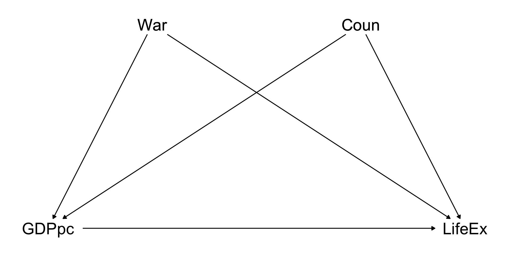
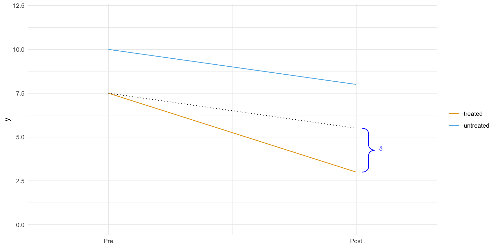
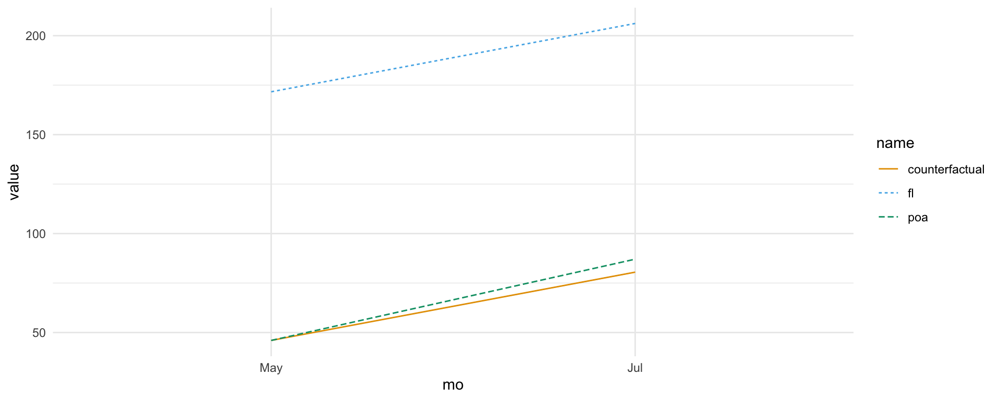
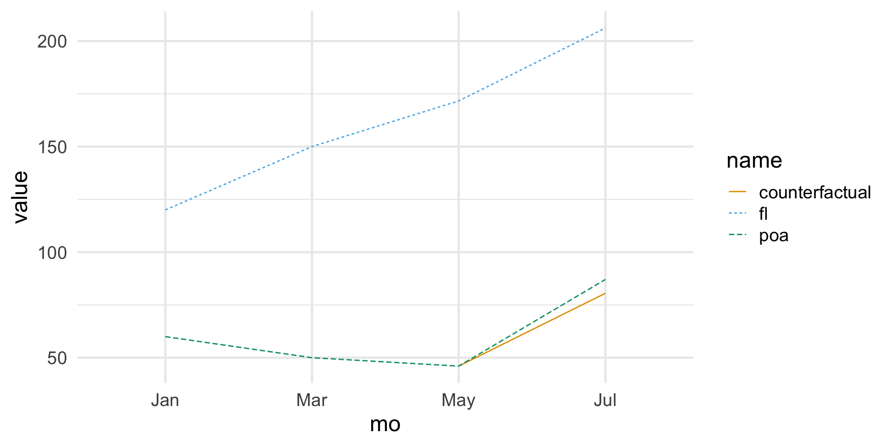

Last week we introduced DAGs as a method to represent our causal assumptions and infer how we might estimate the causal effects of interest.
We worked through a method to estimate causal effects using IPW.
This week
We will look at other methods used to estimate causal effects, along with methods used for special situations, including:
regression adjustment
doubly robust estimation
matching
difference in differences
fixed effects and methods for panel data
Causal Effect Estimation
Inverse Probability Weighting
Last week we used IPW to create a pseudopopulation where, for every confounder level, the numbers of treated and untreated were balanced.
IPW requires us to build a model to predict the treatment, depending on the confounders (assuming we have data for all the confounders).
Inverse Probability Weighting
Repeating our prior process, first we calculate the ipw weights and estimate the ATE using the weights.
ATE estimate by IPW
dat_ <- causalworkshop::net_data |> dplyr::mutate(net =as.numeric(net))propensity_model <-glm( net ~ income + health + temperature , data = dat_, family =binomial())net_data_wts <- propensity_model |> broom::augment(newdata = dat_, type.predict ="response") |># .fitted is the value predicted by the model# for a given observation dplyr::mutate(wts = propensity::wt_ate(.fitted, .exposure = net))net_data_wts |>lm(malaria_risk ~ net, data = _, weights = wts) |> broom::tidy(conf.int =TRUE) |> gt::gt() |> gtExtras::gt_theme_espn()
term
estimate
std.error
statistic
p.value
conf.low
conf.high
(Intercept)
42.74
0.4420
96.69
0.000e+00
41.87
43.61
net
-12.54
0.6243
-20.10
5.498e-81
-13.77
-11.32
Inverse Probability Weighting
The function 1propensity::wt_ate calculates unstabilized weights by default. In the last lecture we looked at the distribution of weights and decided they were stable enough, because none of the weights were too big or too small.
Let’s explore the question of IPW stabilization a bit more.
Figure 1
Inverse Probability Weighting
Stabilized weights
The IP weights (given covariate set \(L\)) are \(W^A=1/\mathbb{E}[D|L]\). Because the denominator can be very close to \(0\) or \(1\) the estimates using these weights can be unstable.
Stabilized weights are often used to address this, e.g. the function propensity::wt_ate with stabilize = TRUE multiplies the weights by the mean of the treatment so in this case \(SW^A=\mathbb{E}[D]/\mathbb{E}[D|L]\).
Inverse Probability Weighting
V-Stabilized weights
Baseline covariates (\(V\subset L\)) are also used to stabilize IP weights: \(SW^A(V)=\mathbb{E}[D|V]/\mathbb{E}[D|L]\).
Note the the variables \(V\) need to be included in the numerator and the denominator (as part of \(L\))
V-stabilization results in IP weights that are more stabilized than the ones without V.
Inverse Probability Weighting
We know that IPW weighting should create a pseudo-population that make the covariates more balanced by treatment. In the last lecture we checked this using histograms. Here we check this via the statistics of the data:
gtsummary::tbl_summary( net_data_wts , by = net , include =c(net,income,health,temperature,malaria_risk)) |># add an overall column to the table gtsummary::add_overall(last =TRUE)
Next we use bootstrapping to generate proper confidence intervals for the effect, first by creating a function to generate (unstabilized) ipw effect estimates for each bootstrap split:
fit_ipw <-function(split, ...) {# get bootstrapped data sample with `rsample::analysis()`if("rsplit"%in%class(split)){ .df <- rsample::analysis(split) }elseif("data.frame"%in%class(split)){ .df <- split }# fit propensity score model propensity_model <-glm( net ~ income + health + temperature,data = .df,family =binomial() )# calculate inverse probability weights .df <- propensity_model |> broom::augment(type.predict ="response", data = .df) |> dplyr::mutate(wts = propensity::wt_ate(.fitted, net))# fit correctly bootstrapped ipw modellm(malaria_risk ~ net, data = .df, weights = wts) |> broom::tidy()}
Inverse Probability Weighting
Next we use our function to bootstrap proper confidence intervals:
# create bootstrap samplesbootstrapped_net_data <- rsample::bootstraps( dat_,times =1000,# required to calculate CIs laterapparent =TRUE)# create ipw and fit each bootstrap sampleresults <- bootstrapped_net_data |> dplyr::mutate(ipw_fits = purrr::map(splits, fit_ipw))
Regression Adjustment
IPW estimates rely on a model to predict the treatment using covariate/confounder values. We know that we can also predict the effect of treatment by building a model to predict the outcome using a regression model, regressing the effect on the treatment and covariate/confounder values.
regression adjustment
outcome_model <-glm( malaria_risk ~ net + income + health + temperature + insecticide_resistance +I(health^2) +I(temperature^2) +I(income^2),data = dat_)outcome_model |> broom::tidy(conf.int =TRUE)
And we can also bootstrap the regression adjustment estimates to get confidence intervals, first by creating the estimation function, then generating bootstrapped estimates, like we did with IPWs:
fit_reg <-function(split, ...) {# get bootstrapped data sample with `rsample::analysis()`if("rsplit"%in%class(split)){ .df <- rsample::analysis(split) }elseif("data.frame"%in%class(split)){ .df <- split }# fit outcome modelglm(malaria_risk ~ net + income + health + temperature + insecticide_resistance +I(health^2) +I(temperature^2) +I(income^2), data = .df )|> broom::tidy()}both_results <- results |> dplyr::mutate(reg_fits = purrr::map(splits, fit_reg))
IPW vs Regression Adjustment
We can compare the results:
both_results_dat <- both_results |> dplyr::mutate(reg_estimate = purrr::map_dbl( reg_fits,# pull the `estimate` for net for each fit \(.fit) .fit |> dplyr::filter(term =="net") |> dplyr::pull(estimate) ) , ipw_estimate = purrr::map_dbl( ipw_fits,# pull the `estimate` for net for each fit \(.fit) .fit |> dplyr::filter(term =="net") |> dplyr::pull(estimate) ) )
Note that each mean ATE estimate is within the CIs of the other ATE mean estimate.
IPW vs Regression Adjustment
There is a package (boot) that performs cross-validation and CI estimation at the same time:
use the boot package for CI estimation of regression adjustment
# bootstrap (1000 times) using the fit_reg functionboot_out_reg <- boot::boot(data = causalworkshop::net_data |> dplyr::mutate(net =as.numeric(net)) , R =1000 , sim ="ordinary" , statistic = (\(x,y){ # x is the data, y is a vector of row numbers for the bootstrap samplefit_reg(x[y,]) |> dplyr::filter(term =="net") |> dplyr::pull(estimate) }))# calculate the CIsCIs <- boot_out_reg |> boot::boot.ci(L = boot::empinf(boot_out_reg, index=1L, type="jack"))tibble::tibble(CI =c("lower", "upper"), normal = CIs$normal[-1], basic = CIs$basic[-(1:3)] , percent = CIs$percent[-(1:3)]) |> gt::gt() |> gtExtras::gt_theme_espn()
CI
normal
basic
percent
lower
-12.92
-12.92
-12.90
upper
-11.85
-11.85
-11.83
Doubly Robust Estimation
Don’t Put All your Eggs in One Basket
We’ve learned how to use linear regression and propensity score weighting to estimate \(E[Y|D=1] - E[Y|D=0] | X\). But which one should we use and when?
When in doubt, just use both! Doubly Robust Estimation is a way of combining propensity score and linear regression in a way you don’t have to rely on either of them.
D <-"net"Y <-"malaria_risk"X <-paste0(c('income', 'health', 'temperature'),c(rep('_poly_1',3),rep('_poly_2',3)))doubly_robust_rec <- causalworkshop::net_data |> dplyr::mutate(net =as.numeric(net)) |> recipes::recipe(malaria_risk ~ net + income + health + temperature) |># NOTE: these are orthogonal polynomial terms, were not used in regression adjustment earlier recipes::step_poly(income, health, temperature) |> recipes::prep() doubly_robust_dat <- doubly_robust_rec |> recipes::bake(new_data=NULL)
doubly_robust <-function(df, X, D, Y){ ps <-# propensity scoreas.formula(paste(D, " ~ ", paste(X, collapse="+"))) |> stats::glm( data = df, family =binomial() ) |> broom::augment(type.predict ="response", data = df) |> dplyr::pull(.fitted) lin_frml <-formula(paste(Y, " ~ ", paste(X, collapse="+"))) idx <- df[,D] |> dplyr::pull(1) ==0 mu0 <-# mean response D == 0lm(lin_frml, data = df[idx,]) |> broom::augment(type.predict ="response", newdata = df[,X]) |> dplyr::pull(.fitted) idx <- df[,D] |> dplyr::pull(1) ==1 mu1 <-# mean response D == 1lm(lin_frml, data = df[idx,]) |> broom::augment(type.predict ="response", newdata = df[,X]) |> dplyr::pull(.fitted)# convert treatment factor to integer | recast as vectors d <- df[,D] |> dplyr::pull(1) |>as.character() |>as.numeric() y <- df[,Y] |> dplyr::pull(1)mean( d*(y - mu1)/ps + mu1 ) -mean(( 1-d)*(y - mu0)/(1-ps) + mu0 )}
doubly_robust_dat |>doubly_robust(X, D, Y)
[1] -12.9
Doubly Robust Estimation
Once again, we can use bootstrap to construct confidence intervals.
The doubly robust estimator is called doubly robust because it only requires one of the models, \(\hat{P}(x)\) or \(\hat{\mu}(x)\), to be correctly specified.
Assume that \(\hat{\mu_1}(x)\) is correct. If the propensity score model is wrong, we wouldn’t need to worry. Because if \(\hat{\mu_1}(x)\) is correct, then \(E[D_i(Y_i - \hat{\mu_1}(X_i))]=0\). That is because the multiplication by \(D_i\) selects only the treated and the residual of \(\hat{\mu_1}\) on the treated have, by definition, mean zero.
This causes the whole thing to reduce to \(\hat{\mu_1}(X_i)\), which is correctly estimated \(E[Y^1]\) by assumption. Similar reasoning applies to the estimator of \(E[Y^0]\).
Doubly Robust Estimation
Here we deliberately bias the IPW estimate by replacing the propensity score by a random uniform variable that goes from 0.1 to 0.9 (we don’t want very small weights to blow up the propensity score variance). Since this is random, there is no way it is a good propensity score model, but the doubly robust estimator still manages to produce an estimation that is very close to when the propensity score was estimated with logistic regression.
Messing up the propensity score yields slightly different ATEs, but not by much. Now let’s again take a good look at the first part of the estimator, rearranging some terms:
Assume that the propensity score \(\hat{P}(X_i)\) is correctly specified. In this case, \(E[D_i - \hat{P}(X_i)]=0\), which wipes out the part dependent on \(\hat{\mu_1}(X_i)\). This reduces the doubly robust estimator to the propensity score weighting estimator \(\frac{D_iY_i}{\hat{P}(X_i)}\), which is correct by assumption.
So, even if the \(\hat{\mu_1}(X_i)\) is wrong, the estimator will still be correct, provided that the propensity score is correctly specified.
Doubly Robust Estimation
define a DRE with a bad regression model
doubly_robust_bad_reg <-function(df, X, D, Y){ ps <-# propensity scoreas.formula(paste(D, " ~ ", paste(X, collapse="+"))) |> stats::glm( data = df, family =binomial() ) |> broom::augment(type.predict ="response", data = df) |> dplyr::pull(.fitted) mu0 <-rnorm(dim(df)[1], 0, 1) # wrong mean response D == 0 mu1 <-rnorm(dim(df)[1], 0, 1) # wrong mean response D == 1# convert treatment factor to integer | recast as vectors d <- df[,D] |> dplyr::pull(1) |>as.character() |>as.numeric() y <- df[,Y] |> dplyr::pull(1)mean( d*(y - mu1)/ps + mu1 ) -mean(( 1-d)*(y - mu0)/(1-ps) + mu0 )}
Once more, messing up the conditional mean model alone yields only slightly different ATE. The magic of doubly robust estimation happens because in causal inference, there are two ways to remove bias from our causal estimates: you either model the treatment mechanism or the outcome mechanism. If either of these models are correct, you are good to go.
One caveat is that, in practice, it’s very hard to model precisely either of those. More often, what ends up happening is that neither the propensity score nor the outcome model are 100% correct. They are both wrong, but in different ways. When this happens, it is not exactly settled [1][2][3] if it’s better to use a single model or doubly robust estimation. At least it gives you two possibilities of being correct.
Finite Sample Bias
Finite Sample Bias
We know that not accounting for confounders or blocking open backdoor paths can bias our causal estimates, but it turns out that even after accounting for all confounders, we may still get a biased estimate with finite samples. Many of the properties we tout in statistics rely on large samples—how “large” is defined can be opaque. Let’s look at a quick simulation. Here, we have an exposure/treatment, \(X\), an outcome, \(Y\), and one confounder, \(Z\). We will simulate \(Y\), which is only dependent on \(Z\) (so the true treatment effect is 0), and \(X\), which also depends on \(Z\).
\[
\begin{align*}
Z &\sim \mathscr{N}(0,1)\\
X & = \mathrm{ifelse}(0.5+Z>0,1,0)\\
Y & = Z + \mathscr{N}(0,1)
\end{align*}
\]
Finite Sample Bias
Sampling code
set.seed(928)n <-100finite_sample <- tibble::tibble(# z is normally distributed with a mean: 0 and sd: 1z =rnorm(n),# x is defined from a probit selection model with normally distributed errorsx = dplyr::case_when(0.5+ z +rnorm(n) >0~1,TRUE~0 ),# y is continuous, dependent only on z with normally distrbuted errorsy = z +rnorm(n))
Finite Sample Bias
If we fit a propensity score model using the one confounder \(Z\) and calculate the weighted estimator, we should get an unbiased result (which in this case would be \(0\)).
fit the propensity score model with finite samples
Our effect of is pretty far from 0, although it’s hard to know if this is really bias, or something we are just seeing by chance in this particular simulated sample.
To explore the potential for finite sample bias, we can rerun this simulation many times at different sample sizes:
fit the propensity score model with different number of finite samples
Finite sample bias present with ATE weights created using correctly specified propensity score model, varying the sample size from n = 50 to n = 10,000
Finite Sample Bias
This is demonstrates finite sample bias. Notice that even when the sample size is quite large (5,000) we still see some bias away from the “true” effect of 0. It isn’t until a sample size larger than 10,000 that we see this bias disappear.
Estimands that utilize weights that are unbounded (i.e. that theoretically can be infinitely large) are more likely to suffer from finite sample bias. The likelihood of falling into finite sample bias depends on:
the estimand you have chosen (i.e. are the weights bounded?)
the distribution of the covariates in the exposed and unexposed groups (i.e. is there good overlap? Potential positivity violations, when there is poor overlap, are the regions where weights can become too large)
the sample size.
Matching
Matching
Regression is good at controlling for additional variables when we do a test vs control comparison. If we have independence, \((Y^0, Y^1)\perp D | X\), then regression can identify the ATE by controlling for \(X\).
To get some intuition about controlling for \(X\), let’s remember the case when all variables \(X\) are dummy variables.
If that is the case, regression partitions the data into the dummy cells and computes the mean difference between test and control. Effectively we are calculating doing
\[
E[Y|D=1, X=x] - E[Y|D=0, X=x]
\]
where \(x\) is a dummy cell (all dummies set to 1, for example).
Regression then combines the estimate in each of the cells to produce a final ATE. The way it does this is by applying weights to the cell proportional to the variance of the treatment on that group.
Matching
To give an example, suppose we try to estimate the effect of a drug and I have drug data for 6 men and 4 women. The response variable is days hospitalised and I hope my drug can lower that. On men, the true causal effect is -3, so the drug lowers the stay period by 3 days. On women, it is -2.
To make matters more interesting, men are much more affected by this illness and stay longer at the hospital. They also get much more of the drug. Only 1 out of the 6 men does not get the drug. On the other hand, women are more resistant to this illness, so they stay less at the hospital. 50% of the women get the drug.
sex
drug
days
M
1
5
M
1
5
M
1
5
M
1
5
M
1
5
M
0
8
W
1
2
W
0
4
W
1
2
W
0
4
Matching
Note that simple comparison of treatment and control yields a negatively biased effect, that is, the drug seems less effective than it truly is. This is expected, since we’ve omitted the sex confounder.
In this case, the estimated ATE is smaller than the true one because men get more of the drug and are more affected by the illness.
drug
mean_effect
ATE
0
5.333
NA
1
4.143
-1.19
Matching
Since the true effect for men is -3 and the true effect for women is -2, the ATE should be
\[
ATE=\dfrac{(-3*6) + (-2*4)}{10}=-2.6
\]
This estimate is done by
partitioning the data into confounder cells, in this case, men and women,
estimating the effect on each cell and
combining the estimate with a weighted average, where the weight is the sample size of the cell or covariate group.
Matching
If we had exactly the same number of men and women in the data, the ATE estimate would be right in the middle of the ATE of the 2 groups, -2.5. Since there are more men than women in our dataset, the ATE estimate is a little bit closer to the men’s ATE.
This is called a non-parametric estimate, since it places no assumption on how the data was generated.
If we control for sex using regression, we will add the assumption of linearity. Regression will also partition the data into men and women and estimate the effect on both of these groups.
So far, so good. However, when it comes to combining the effect on each group, it does not weigh them by the sample size.
Matching
Instead, regression uses weights that are proportional to the variance of the treatment in that group. In our case, the variance of the treatment in men is smaller than in women, since only one man is in the control group.
To be exact, the variance of D for men is \(0.139=1/6*(1 - 1/6)\) and for women is \(0.25=2/4*(1 - 2/4)\).
So regression will give a higher weight to women in our example and the ATE will be a bit closer to the women’s ATE of -2.
Regression summary (ATE)
days ~ drug + sex
term
estimate
std.error
statistic
p.value
(Intercept)
7.5455
0.188
40.093
0.000
drug
−2.4545
0.188
−13.042
0.000
sexW
−3.3182
0.176
−18.849
0.000
Matching
The result is more intuitive with dummy variables, but regression also keeps continuous variables constant while estimating the effect.
Also, with continuous variables, the ATE will point in the direction where covariates have more variance.
So we’ve seen that regression has its idiosyncrasies. It is linear, parametric, likes high variance features… This can be good or bad, depending on the context.
Because of this, it’s important to be aware of other techniques we can use to control for confounders. Not only are they an extra tool in your causal tool belt, but understanding different ways to deal with confounding expands our understanding of the problem.
For this reason, we’ll now examne the Subclassification Estimator!
Matching: subclassification
In general, if there is some causal effect we want to estimate, but it is hard to do so because of confounding of some variables X, what we need to do is make the treatment vs control comparison within small groups where X is the same.
If we have conditional independence \((Y^0, Y^1)\perp D | X\) , then we can write the ATE as follows.
\[
ATE = \int(E[Y|X=x, D=1] - E[Y|X=x, D=0])dP(x)
\]
What the integral does is it goes through all the space of the distribution of features X, computes the difference in means for all those tiny spaces and combines everything into the ATE.
Matching: subclassification
Another way to see this is to think about a discrete set of features.
In this case, we can say that values the feature set X takes on falls into K different sets \(\{X_1, X_2, ..., X_k\}\) and what we are doing is computing the treatment effect in each set and combining them into the ATE.
In this discrete case, converting the integral to a sum, we can derive the subclassifications estimator:
As you can see, we are computing a local ATE for each cell and combining them using a weighted average, where the weights are the sample size of the cell. In our medicine example above, this would be the first estimate, which gave us −2.6.
The subclassification estimator isn’t used much in practice, because of the curse of dimensionality.
Matching estimator
The subclassification estimator gives us a nice intuition of what a causal inference estimator should do, how it should control for confounders.
This allows us to explore other kinds of estimators, such as the Matching Estimator.
Matching estimator
When some confounder X makes it so that treated and untreated are not initially comparable, we can make them so by matching each treated unit with a similar untreated unit - finding an untreated twin for every treated unit. In making such comparisons, treated and untreated become again comparable.
As an example, let’s suppose we are trying to estimate the effect of a trainee program on earnings. Here is what the trainees looks like:
However, if we look at the data tables, we notice that trainees are much younger than non trainees, which indicates that age is probably a confounder.
Matching estimator
We can use matching on age to try to correct that.
We will take unit 1 from the treated and pair it with unit 27, since both are 28 years old. Unit 2 we will pair it with unit 34, unit 3 with unit 37, unit 4 we will pair it with unit 35… When it comes to unit 5, we need to find someone with age 29 from the non treated, but that is unit 37, which is already paired.
This is not a problem, since we can use the same unit multiple times. If more than 1 unit is a match, we can choose randomly between them.
If we take the mean of this last column we get the ATET estimate while controlling for age. Notice how the estimate is now very positive, compared to the previous one where we used a simple difference in means.
This is a contrived example, just to introduce matching.
Matching estimator
In practice, we usually have more than one feature and units don’t match perfectly. In this case, we have to define some measurement of proximity to compare how units are close to each other.
One common metric for this is the euclidean norm \(||X_i - X_j||\). This difference, however, is not invariant to the scale of the features.
This means that features like age, that take values on the tenths, will be much less important when computing this norm compared to features like income, which take the order of hundreds.
For this reason, before applying the norm, we need to scale the features so that they are on roughly the same scale.
Matching estimator
Having defined a distance measure, we can now define the match as the nearest neighbour to that sample we wish to match.
We can write the matching estimator the following way:
Where \(Y_{jm}(i)\) is the sample from the other treatment group which is most similar to \(Y_i\).
We scale by \(2D_i - 1\) to match both ways: treated with controls and controls with the treatment.
Matching estimator
To test this estimator, let’s consider a medicine example.
Once again, we want to find the effect of a medication on days until recovery.
Unfortunately, this effect is confounded by severity, sex and age. We have reasons to believe that patients with more severe conditions have a higher chance of receiving the medicine.
If we look at a simple difference in means, \(E[Y|D=1]-E[Y|D=0]\), we get that the treated take, on average, 16.9 more days to recover than the untreated.
This is probably due to confounding, since we don’t expect the medicine to cause harm to the patient.
To correct for this bias, we will control for X using matching.
First, we need to remember to scale our features, otherwise, features like age will have higher importance than features like severity when we compute the distance between points.
Instead of coding a matching function, we will use the K nearest neighbour algorithm from caret::knnreg.
This algorithm makes predictions by finding the nearest data point in an estimation or training set.
For matching, we will need 2 of those. One, \(mt_0\), will store the untreated points and will find matches in the untreated when asked to do so.
The other, \(mt_1\), will store the treated point and will find matches in the treated when asked to do so. After this fitting step, we can use these KNN models to make predictions, which will be our matches.
Matching estimator
Code
treated <- data_med |> dplyr::filter(medication==1)untreated <- data_med |> dplyr::filter(medication==0)mt0 <-# untreated knn model predicting recovery caret::knnreg(x = untreated |> dplyr::select(sex,age,severity), y = untreated$recovery, k=1)mt1 <-# treated knn model predicting recovery caret::knnreg(x = treated |> dplyr::select(sex,age,severity), y = treated$recovery, k=1)predicted <-# combine the treated and untreated matchesc(# find matches for the treated looking at the untreated knn model treated |> tibble::rowid_to_column("ID") |> {\(y)split(y,y$ID)}() |># hack for native pipe # split(.$ID) |> # this vesion works with magrittr purrr::map( (\(x){ x |> dplyr::mutate(match =predict( mt0, x[1,c('sex','age','severity')] ) ) }) )# find matches for the untreated looking at the treated knn model , untreated |> tibble::rowid_to_column("ID") |> {\(y)split(y,y$ID)}() |># split(.$ID) |> purrr::map( (\(x){ x |> dplyr::mutate(match =predict( mt1, x[1,c('sex','age','severity')] ) ) }) ) ) |># bind the treated and untreated data dplyr::bind_rows()predicted |> dplyr::slice_head(n=5) |> gt::gt() |> gt::fmt_number(columns =c('sex','age','severity'), decimals =6) |> gtExtras::gt_theme_espn() |> gt::as_raw_html()
ID
sex
age
severity
medication
recovery
match
1
−0.996980
0.280787
1.459800
1
31
39
2
1.002979
0.865375
1.502164
1
49
52
3
−0.996980
1.495134
1.268540
1
38
46
4
1.002979
−0.106534
0.545911
1
34
45
5
−0.996980
0.043034
1.428732
1
30
39
Matching estimator
With the matches, we can now apply the matching estimator formula
Now, \(\mu_0(X_i) - \mu_0(X_j(i))\) is not so simple to understand, so let’s look at it more carefully.
\(\mu_0(X_i)\) is the outcome Y value of a treated unit \(i\) had it not been treated. It is the counterfactual outcome \(Y^0\) for unit \(i\).
\(\mu_0(X_j(i))\) is the outcome of the untreated unit \(j\) that is the match of unit \(i\).
It is also the \(Y^0\), but for unit \(j\) now.
Only this time, it is a factual outcome, because \(j\) is in the non treated group.
Now, because \(j\) and \(i\) are only similar, but not the same, this will likely not be zero. In other words, \(X_i \approx X_j\), so, \(Y^0_i \approx Y^0_j\).
Matching bias
As we increase the sample size, there will be more units to match, so the difference between unit \(i\) and its match \(j\) will also get smaller.
But this difference converges to zero slowly.
As a result \(E[\sqrt{N_1}(\mu_0(X_i) - \mu_0(X_j(i)))]\) may not converge to zero, because the \(\sqrt{N_1}\) grows faster than \((\mu_0(X_i) - \mu_0(X_j(i)))\) diminishes.
Matching bias
Bias arises when the matching discrepancies are huge. Fortunately, we know how to correct it. Each observation contributes \((\mu_0(X_i) - \mu_0(X_j(i))\) to the bias so all we need to do is subtract this quantity from each matching comparison in our estimator.
To do so, we can replace \(\mu_0(X_j(i))\) with some sort of estimate of this quantity \(\hat{\mu}_0(X_j(i))\), which can be obtained with models like linear regression. This updates the ATET estimator to the following equation:
where \(\hat{\mu_0}(x)\) is some estimative of \(E[Y|X, D=0]\), like a linear regression fitted only on the untreated sample.
Matching bias
Code
ols0 <-lm(recovery ~ sex + age + severity, data = untreated) ols1 <-lm(recovery ~ sex + age + severity, data = treated) # find the units that match to the treatedtreated_match_index <-# RANN::nn2 does Nearest Neighbour Search (RANN::nn2(mt0$learn$X, treated |> dplyr::select(sex,age,severity), k=1))$nn.idx |>as.vector()# find the units that match to the untreateduntreated_match_index <-# RANN::nn2 does Nearest Neighbour Search (RANN::nn2(mt1$learn$X, untreated |> dplyr::select(sex,age,severity), k=1))$nn.idx |>as.vector()predicted <-c( purrr::map2(.x = treated |> tibble::rowid_to_column("ID") |> {\(y)split(y,y$ID)}() # split(.$ID) , .y = treated_match_index , .f = (\(x,y){ x |> dplyr::mutate(match =predict( mt0, x[1,c('sex','age','severity')] ) , bias_correct =predict( ols0, x[1,c('sex','age','severity')] ) -predict( ols0, untreated[y,c('sex','age','severity')] ) ) }) ) , purrr::map2(.x = untreated |> tibble::rowid_to_column("ID") |> {\(y)split(y,y$ID)}() # split(.$ID) , .y = untreated_match_index , .f = (\(x,y){ x |> dplyr::mutate(match =predict( mt1, x[1,c('sex','age','severity')] ) , bias_correct =predict( ols1, x[1,c('sex','age','severity')] ) -predict( ols1, treated[y,c('sex','age','severity')] ) ) }) )) |># bind the treated and untreated data dplyr::bind_rows()predicted |> dplyr::slice_head(n=5) |> gt::gt() |> gt::fmt_number(columns =c('sex','age','severity'), decimals =6) |> gtExtras::gt_theme_espn()
ID
sex
age
severity
medication
recovery
match
bias_correct
1
−0.996980
0.280787
1.459800
1
31
39
4.404
2
1.002979
0.865375
1.502164
1
49
52
12.915
3
−0.996980
1.495134
1.268540
1
38
46
1.871
4
1.002979
−0.106534
0.545911
1
34
45
-0.497
5
−0.996980
0.043034
1.428732
1
30
39
2.610
Matching bias
Doesn’t this defeat the point of matching? If I have to run a linear regression anyway, why don’t I use only that, instead of this complicated model.
First of all, this linear regression that we are fitting doesn’t extrapolate on the treatment dimension to get the treatment effect. Instead, its purpose is just to correct bias.
Linear regression here is local, in the sense that it doesn’t try to see how the treated would be if it looked like the untreated. It does none of that extrapolation. This is left to the matching part.
The meat of the estimator is still the matching component. The point is that OLS is secondary to this estimator.
Matching bias
The second point is that matching is a non-parametric estimator. It doesn’t assume linearity or any kind of parametric model.
As such, it is more flexible than linear regression and can work in situations where linear regression will not, namely, those where non linearity is very strong.
Matching bias
With the bias correction formula, I get the following ATE estimation.
Of course, we also need to place a confidence interval around this measurement.
In practice, we can simply use someone else’s code and just import a matching estimator. Here is one from the library Matching.
Code
require(Matching)# See https://www.jsekhon.com for additional documentation.c("ATE", "ATC", "ATT") |> purrr::map( (\(x){ pairmatching <- Matching::Match(Y = data_med$recovery , Tr = data_med$medication , X = data_med |> dplyr::select('sex','age','severity') , estimand = x , BiasAdjust =TRUE ) tibble::tibble(measure = x, est = pairmatching$est[1,1], se = pairmatching$se) }) ) |> dplyr::bind_rows() |> gt::gt() |> gt::fmt_number(columns =c('est','se'), decimals =3) |> gt::tab_header(title ="Treatment Effect Estimates: Matching" , subtitle ="using R package Matching" ) |> gtExtras::gt_theme_espn()
Treatment Effect Estimates: Matching
using R package Matching
measure
est
se
ATE
−7.708
0.962
ATC
−6.664
1.644
ATT
−9.680
0.123
Finally, we can say with confidence that our medicine does indeed lower the time someone spends at the hospital. The ATE estimate is just a little bit lower than our algorithm, due to the difference in tie breaking of matches of knn implementation and the Matching R package.
Matching bias again
We saw that matching is biased when the unit and its match are not so similar. But what causes them to be so different?
As it turns out, the answer is quite simple and intuitive. It is easy to find people that match on a few characteristics, like sex. But if we add more characteristics, like age, income, city of birth and so on, it becomes harder and harder to find matches. In more general terms, the more features we have, the higher will be the distance between units and their matches.
This is not something that hurts only the matching estimator. It ties back to the subclassification estimator we saw earlier. In that contrived medicine example where with man and woman, it was quite easy to build the subclassification estimator. That was because we only had 2 cells: man and woman. But what would happen if we had more?
Let’s say we have 2 continuous features like age and income and we manage to discretise them into 5 buckets each. This will give us 25 cells, or \(5^2\). And what if we had 10 covariates with 3 buckets each? Doesn’t seem like a lot right? Well, this would give us 59049 cells, or \(3^{10}\). It’s easy to see how this can blow out of proportion pretty quickly. This is a phenomena pervasive in all data science, which is called the The Curse of Dimensionality!!!
Matching bias again
In the context of the subclassification estimator, the curse of dimensionality means that it will suffer if we have lots of features.
Lots of features imply multiple cells in X. If there are multiple cells, some of them will have very few data. Some of them might even have only treated or only control, so it won’t be possible to estimate the ATE there, which would break our estimator.
In the matching context, this means that the feature space will be very sparse and units will be very far from each other. This will increase the distance between matches and cause bias problems.
Matching bias again
As for linear regression, it actually handles this problem quite well.
What it does is project all the features X into a single one, the Y dimension. It then makes treatment and control comparison on that projection.
So, in some way, linear regression performs some sort of dimensionality reduction to estimate the ATE. It’s quite elegant.
Fixed Effects
Fixed Effects
One problem we might have is that we can’t really control for things if we can’t measure them
And there are lots of things we can’t measure or don’t have data for!
So what can we do?
Fixed Effects
The Solution
If we observe each entity/person/firm/country multiple times, then we can forget about controlling for the actual back-door variable we’re interested in
And just control for entity/person/firm/country identity instead!
This will control for EVERYTHING unique to that individual, whether we can measure it or not!
Fixed Effects
Consider data that tracks life expectancy and GDP per capita in many countries over time.
and then group by country, and estimate the effect of GDP per capita on life expectancy, controlling for country.
Fixed Effects
Note that there are LOTS of things that might be back doors between GDP per capita and life expectancy
War, disease, political institutions, trade relationships, health of the population, economic institutions…
Fixed Effects
Code
dag <- ggdag::dagify( LifeEx~GDPpc+A+B+C+D+E+F+G+H, GDPpc~A+B+C+D+E+F+G+H,coords=list(x=c(LifeEx=4,GDPpc=2,A=1,B=2,C=3,D=4,E=1,F=2,G=3,H=4),y=c(LifeEx=2,GDPpc=2,A=3,B=3,C=3,D=3,E=1,F=1,G=1,H=1) )) |> ggdag::tidy_dagitty()ggdag::ggdag_classic(dag,node_size=20) + ggdag::theme_dag_blank()
Fixed Effects
There’s no way we can identify this
The list of back doors is very long
And likely includes some things we can’t measure!
Fixed Effects
HOWEVER! If we think that these things are likely to be constant within country…
Then we don’t really have a big long list of back doors, we just have one: “country”
Fixed Effects
We can now identify our effect even if some of our back doors include variables that we can’t actually measure
When we do this, we’re basically comparing countries to themselves at different time periods!
Pretty good way to do an apples-to-apples comparison!
Fixed Effects
Fixed Effects
The post-fixed-effects dots are basically a bunch of “Raw Country X” pasted together.
Imagine taking “Raw Pakistan” and moving it to the center, then taking “Raw Britain” and moving it to the center, etc.
Ignoring the baseline differences between Pakistan, Britain, China, etc., in their GDP per capita and life expectancy, and just looking within each country.
We are ignoring all differences between countries (since that way back doors lie!) and looking only at differences within countries.
Fixed Effects is sometimes also referred to as the “within” estimator
Fixed Effects
Fixed Effects
This does assume, of course, that all those back door variables CAN be described by country
In other words, that these back doors operate by things that are fixed within country
If something is a back door and changes over time in that country, fixed effects won’t help!
Fixed Effects
For example, earlier we mentioned war… that’s not fixed within country! A given country is at war sometimes and not other times.

Fixed Effects
Of course, in this case, we could control for War as well and be good!
Time-varying things doesn’t mean that fixed effects doesn’t work, it just means you need to control for that stuff too
It always comes down to thinking carefully about your diagram
Fixed effects mainly works as a convenient way of combining together lots of different constant-within-country back doors into something that lets us identify the model even if we can’t measure them all
Fixed Effects Regression
We can just do fixed effects as we did-subtract out the group means and analyze (perhaps with regression) what’s left, or
We can also include dummy variables for each group/individual, which accomplishes the same thing
We want to “control for group/individual” right? So… just… put in a control for group/individual
Of course, like all categorical variables as predictors, we leave out a reference group
But here, unlike with, say, a binary predictor, we’re rarely interested in the FE coefficients themselves. Most software works with the mean-subtraction approach (or a variant) and don’t even report them!
Fixed Effects Regression: Variation
Remember we are isolating within variation
If an individual has no within variation, say their treatment never changes, they basically get washed out entirely!
A fixed-effects regression wouldn’t represent them. And can’t use FE to study things that are fixed over time
And in general if there’s not a lot of within variation, FE is going to be very noisy. Make sure there’s variation to study!
Fixed Effects in Regression: Notes
It’s common to cluster standard errors at the level of the fixed effects, since it seems likely that errors would be correlated over time (autocorrelated errors)
It’s possible to have more than one set of fixed effects. \(Y = \beta_i + \beta_j + \beta_1X + \varepsilon\)
But interpretation gets tricky - think through what variation in \(X\) you’re looking at at that point!
Coding up Fixed Effects
We can use the fixest package
It’s very fast, and can be easily adjusted to do FE with other regression methods like logit, or combined with instrumental variables
Clusters at the first listed fixed effect by default
m1 <- fixest::feols(outcome ~ predictors | FEs, data = data)msummary(m1)
FE Example: Sentencing
What effect do sentencing reforms have on crime?
One purpose of punishment for crime is to deter crime
If sentences are more clear and less risky, that may reduce a deterrent to crime and so increase crime
Marvell & Moody study this using data on reforms in US states from 1969-1989
FE Example: Sentencing
In our data we have multiple observations per state
We can see how robbery rates evolve in each state over time as states implement reform
Fixed Effects
You can tell that states are more or less likely to implement reform in a way that’s correlated with the level of robbery they already had
So SOMETHING about the state is driving both the level of robberies AND the decision to implement reform
Who knows what!
Our diagram has reform -> robberies and reform <- state -> robberies, which is something we can address with fixed effects.
Fixed Effects
OLS
FE
+ p < 0.1, * p < 0.05, ** p < 0.01, *** p < 0.001
(Intercept)
1.254***
(0.036)
sentreform
0.352***
0.245**
(0.082)
(0.076)
Num.Obs.
1000
1000
R2
0.018
0.919
R2 Within
0.062
RMSE
1.02
0.29
Std.Errors
by: state
Example
The 1.254, 0.352 included the fact that different kinds of states tend to institute reform
The 0.245 doesn’t!
Looks like the deterrent effect was real! Although important to consider if there might be time-varying back doors too, we don’t account for those in our analysis
What things might change within state over time that would be related to robberies and to sentencing reform?
Event Studies
Event studies
Event studies examine how outcomes evolve around the timing of specific events or policy interventions. Event studies can serve as a standalone causal inference method by exploiting sharp temporal variation in treatment timing.
If treatment timing is as-good-as-random (conditional on observables), then deviations from pre-treatment trends after the event can be causally attributed to treatment.
Event studies
Regression specification
\[Y_{it} = α_i + λ_t + Σ_{k≠-1} β_k × D_{it}^k + ε_{it}\] Where \(D_{it}^k = 1\) if unit \(i\) is \(k\) periods from treatment at time \(t\).
Exogenous timing: Treatment timing uncorrelated with potential outcomes
Stable trends: Outcomes would follow predictable path absent treatment
No anticipation: Agents don’t adjust behavior before official treatment
Event studies
Validity Tests and Diagnostics
Pre-trend Analysis: Examine \(β_k\) for \(k < 0\)
Should be statistically zero if assumptions hold
Gradual buildup suggests anticipation or confounding trends
Placebo Tests:
Estimate “fake” treatment at random times in pre-period
Apply treatment to similar but untreated units
Robustness Checks:
Vary event window length
Test sensitivity to functional form assumptions
Examine heterogeneity across subgroups
Example
Code
set.seed(10)# Create data with 20 groups and 10 time periodsdf <- tidyr::crossing(id =1:20, t =1:10) |># Add an event in period 6 with a one-period positive effect dplyr::mutate(Y =rnorm(dplyr::n()) +1*(t ==6))# Use i() in feols to include time dummies,# specifying that we want to drop t = 5 as the referencem <- fixest::feols(Y ~i(t, ref =5), data = df, cluster ='id')# Plot the results, except for the intercept,# and add a line joining # them and a space and line for the reference groupfixest::coefplot(m, drop ='(Intercept)',pt.join =TRUE, ref =c('t:5'=6), ref.line =TRUE)
Difference-in-Differences
Difference-in-Differences (2x2 DiD)
Panel data on \(Y_{it}\) for \(t=1,2\) and \(i = 1,...,N\)
Treatment timing: Some units (\(D_i=1\)) are treated in period \(2\); every other unit is untreated \((D_i=0)\)
Potential outcomes (POs): Observe \(Y_{it}(1) \equiv Y_{it}(0,1)\) for treated units; and \(Y_{it}(0) \equiv Y_{it}(0,0)\) for comparison.
DiD Estimation and Inference
The most conceptually simple estimator replaces population means with sample analogs: \[\hat{\tau}_{DiD} = (\bar{Y}_{12} - \bar{Y}_{11}) - (\bar{Y}_{02} - \bar{Y}_{01}) \] where \(\bar{Y}_{dt}\) is sample mean for group \(d\) in period \(t\)
This is also know as “4 averages and three subtractions”
Causally we evaluate before treatment vs after treatment
DiD Estimation and Inference
Conveniently, \(\hat\tau_{DiD}\) is algebraically equal to OLS coefficient \(\hat\beta\) from \[\begin{align*}
Y_{it} = \alpha_i + \phi_t + D_{it} \beta + \epsilon_{it},
\end{align*}\] where \(D_{it} = D_i * 1[t=2]\). Also equivalent to \(\beta\) from \(\Delta Y_{i} = \alpha + \Delta D_i \beta + u_{it}\).
Inference: And clustered standard errors are valid as number of clusters grows large.
DiD Estimation and Inference
Aggregating individuals into treated and untreated groups:
Panel Data: same units tracked over time (e.g., National Longitudinal Survey of Youth 1997)
Repeated Cross-Sections: different units sampled at each time (e.g., Census, Current Population Survey)
Violations of parallel trends can arise differently across data types.
Longitudinal Data
We have a balanced panel is when all units are observed in every period.
Imbalanced panel is when units missing in some periods.
Anthony is in periods 1-3,
Bob is in periods 1-3,
Inez is in periods 1 and 3 only,
Dignan is in periods 1 and 2 only
Missingness alone does not violate parallel trends, though it does change the parameter.
Longitudinal Data
In the potential outcomes framework, a treatment effect is defined at the individual level, \(\delta_{it}\)
So if you are missing a person, i, in a period, t, then it does not contribute
The more heterogeneity in the treatment effects, the more the broken panel will shift away from what you think you’re after
Repeated cross-sections
One of the risks of a repeated cross-section is that the composition of the sample may have changed between the pre and post period in ways that are correlated with treatment
Hong (2013) uses repeated cross-sectional data from the Consumer Expenditure Survey (CEX) containing music expenditure and internet use for a random sample of households
Study exploits the emergence of Napster (first file sharing software widely used by Internet users) in June 1999 as a natural experiment
Study compares internet users and internet non-users before and after emergence of Napster
Repeated Cross Section Risks
Repeated cross sections have their own challenges that panels don’t in that the group could be shifting compositionally
Detect using a balance table with covariates highly predictive of the missing E[Y0|D= 1] for this exercise
Percent of cat owners is probably irrelevant to trends in potential outcomes
But age and income is probably relevant for spending habits
We’ll discuss covariates more later, but for now just consider what characteristics are relevant to your outcome
Documenting covariates that cannot be affected by the treatment like this table is a way to check for compositional changes in the sample
Repeated Cross Section Risks
Changes Between Internet and Non-Internet Users Over Time
Characteristic
1997
1998
1999
User
Non-user
User
Non-user
User
Non-user
Demographics
Age
40.2
49.0
42.3
49.0
44.1
49.4
Income
$52,887
$30,459
$51,995
$26,189
$49,970
$26,649
High school graduate
0.18
0.31
0.17
0.32
0.21
0.32
Some college
0.37
0.28
0.35
0.27
0.34
0.27
College grad
0.43
0.21
0.45
0.21
0.42
0.20
Manager
0.16
0.08
0.16
0.08
0.14
0.08
2X2 DiD & covariates
2x2 relies on parallel trends (PT) and no anticipation (NA) to be causal
What if PT is violated and the violation is due to covariates:
imbalance between treated an untreated where covariates are related to outcome dynamics
heterogeneous treatment effects related to covariates
2X2 DiD & covariates
As before, for our DiD estimator to be a causal estimate (ATT) we need (note: conditional on covariates X)
No anticipation: \(E[Y_{t=1}^1|X,D=1] = E[Y_{t=1}^0|X,D=0]\)
Under our assumptions, we can model the outcome evolution and estimate the counterfactual untreated outcome in period 2 for the treated group using regression, and our estimator
It is very common to evaluate the common trend assumption using event studies via a dynamic (TWFE) regression specification including indicators for time relative to treatment. This permits “visual inference” to determine whether the treated group’s trends appear to have deviated from the comparison group’s trends right around the time of treatment.
Event Studies & Fixed Effects
The dynamic (TWFE) regression specification is, for period \(t\in{-T,\ldots,T}\) and treatment at T=0:
To figure out how good billboards were as a marketing channel, A bank placed 3 billboards in the city of Porto Alegre, the capital of the state of Rio Grande do Sul.
They wanted to see if that boosted deposits into our savings account.
Rio Grande do Sul is part of the south of Brazil, one of the most developed regions.
Data was also obtained from another capital from the south, Florianopolis, the capital city of the state of Santa Catarina in Brasil. The idea is that Florianopolis could be used as a control sample to estimate the counterfactual when compared to Porto Alegre. The billboard was placed in Porto Alegre for the entire month of June. The resulting data like this:
Code
dat <- tibble::tibble(y =c(10,8,7.5,3) , x =c(2,4,2,4)# c("pre","post","pre","post") , cls =as.factor(c("untreated","untreated","treated","treated"))) |> dplyr::group_by(cls) dat |>ggplot(aes(x=x, y=y, color = cls)) +geom_line() +geom_line(inherit.aes =FALSE,data = tibble::tibble(x =c(2,4), y =c(7.5,5.5)), aes(x=x, y=y, fill ='black'), linetype ='dotted') +xlim(1,5) +ylim(0,12) +theme_minimal() +theme(legend.title =element_blank(), axis.title.x =element_blank()) +scale_x_continuous(breaks=c(2,4), labels=c("Pre", "Post"), limits =c(1.5,4.5)) + ggbrace::stat_brace(data =data.frame(x =c(3.8, 4.0), y =c(5.5, 3)),aes(x, y),rotate =90, size = .5, col ="blue" ) +annotate("text",x =4.2, y =4.35,label =expression(delta),parse =TRUE, size =3.5, col ="blue" )

Difference-in-Differences
Three Billboards in the South of Brazil
In this example deposits are our outcome variable, the one the bank wishes to increase with the billboards. POA is a dummy variable for the city of Porto Alegre. When it is zero, it means the samples are from Florianopolis. Jul is a dummy for the month of July, or for the post intervention period. When it is zero it refers to samples from May, the pre-intervention period.
Difference-in-Differences
DID Estimator
Let \(Y^D(T)\) be the potential outcome for treatment D on period T. In an ideal world where we have the ability to observe the counterfactual, we would estimate the treatment effect of an intervention the following way:
\[
\hat{ATET} = E[Y^1(1) - Y^0(1)|D=1]
\]
In words, the causal effect is the outcome in the period post intervention in case of a treatment minus the outcome in also in the period after the intervention, but in the case of no treatment. Of course, we can’t measure this because \(Y^0(1)\) is counterfactual.
Difference-in-Differences
DID Estimator
One way around this is a before and after comparison.
\[
\hat{ATET} = E[Y(1)|D=1] - E[Y(0)|D=1]
\]
In our example, we would compare the average deposits from POA before and after the billboard was placed.
This estimator is telling us that we should expect deposits to increase R\(\$ 41.05\) after the intervention. But can we trust this?
Difference-in-Differences
DID Estimator
Notice that \(E[Y(0)|D=1]=E[Y^0(0)|D=1]\), the observed outcome for the treated unit before the intervention is equal to the counterfactual outcome for the treated unit also before the intervention. Since we are using this to estimate \(E[Y^0(1)|D=1]\), the counterfactual after the intervention, this estimation above assumes that \(E[Y^0(1)|D=1] = E[Y^0(0)|D=1]\).
It is saying that in the case of no intervention, the outcome in the latter period would be the same as the outcome from the starting period. This would obviously be false if your outcome variable follows any kind of trend.
Difference-in-Differences
DID Estimator
For example, if deposits are going up in POA, \(E[Y^0(1)|D=1] > E[Y^0(0)|D=1]\), i.e. the outcome of the latter period would be greater than that of the starting period even in the absence of the intervention.
With a similar argument, if the trend in Y is going down, \(E[Y^0(1)|D=1] < E[Y^0(0)|D=1]\). This is to show that this before and after thing is not a great estimator.
Difference-in-Differences
DID Estimator
Another idea is to compare the treated group with an untreated group that didn’t get the intervention:
\[
\hat{ATET} = E[Y(1)|D=1] - E[Y(1)|D=0]
\]
In our example, it would be to compare the deposits from POA to that of Florianopolis in the post intervention period.
This estimator is telling us that the campaign is detrimental and that customers will decrease deposits by R$ 119.10.
Difference-in-Differences
DID Estimator
This estimator is telling us that the campaign is detrimental and that customers will decrease deposits by R\(\$ 119.10\).
Notice that \(E[Y(1)|D=0]=E[Y^0(1)|D=0]\). And since we are using \(E[Y(1)|D=0]\) to estimate the counterfactual for the treated after the intervention, we are assuming we can replace the missing counterfactual like this: \(E[Y^0(1)|D=0] = E[Y^0(1)|D=1]\).
But notice that this would only be true if both groups have a very similar baseline level. For instance, if Florianopolis has way more deposits than Porto Alegre, this would not be true because \(E[Y^0(1)|D=0] > E[Y^0(1)|D=1]\).
On the other hand, if the level of deposits are lower in Florianopolis, we would have \(E[Y^0(1)|D=0] < E[Y^0(1)|D=1]\).
Difference-in-Differences
DID Estimator
Notice that \(E[Y(1)|D=0]=E[Y^0(1)|D=0]\). And since we are using \(E[Y(1)|D=0]\) to estimate the counterfactual for the treated after the intervention, we are assuming we can replace the missing counterfactual like this: \(E[Y^0(1)|D=0] = E[Y^0(1)|D=1]\). But notice that this would only be true if both groups have a very similar baseline level.
For instance, if Florianopolis has way more deposits than Porto Alegre, this would not be true because \(E[Y^0(1)|D=0] > E[Y^0(1)|D=1]\).
On the other hand, if the level of deposits are lower in Florianopolis, we would have \(E[Y^0(1)|D=0] < E[Y^0(1)|D=1]\).
Difference-in-Differences
DID Estimator
Again, this is not a great idea. To solve this, we can use both space and time comparison. This is the idea of the difference in difference approach. It works by replacing the missing counterfactual the following way:
What this does is take the treated unit before the intervention and adds a trend component to it, which is estimated using the control \(E[Y^0(1)|D=0] - E[Y^0(0)|D=0]\). In words, it is saying that the treated after the intervention, had it not been treated, would look like the treated before the treatment plus a growth factor that is the same as the growth of the control.
Difference-in-Differences
DID Estimator
It is important to notice that this assumes that the trends in the treatment and control are the same:
Diff-in-Diff is telling us that we should expect deposits to increase by R\(\$ 6.52\) per customer.
Notice that the assumption that diff-in-diff makes is much more plausible than the other 2 estimators. It just assumes that the growth pattern between the 2 cities are the same. But it doesn’t require them to have the same base level nor does it require the trend to be zero.
Difference-in-Differences
DID Estimator
To visualize what diff-in-diff is doing, we can project the growth trend from the untreated into the treated to see the counterfactual, that is, the number of deposits we should expect if there were no intervention.

The small difference between the solid and the dashed lines shows the small treatment effect on Porto Alegre.
Difference-in-Differences
DID Estimator
But how much can we trust this estimator? To get standard errors we use a neat trick that uses regression. Specifically, we will estimate the following linear model
Notice that \(\beta_0\) is the baseline of the control. In our case, is the level of deposits in Florianopolis in the month of May.
If we turn on the treated city dummy, we get \(\beta_1\). So \(\beta_0+\beta_1\) is the baseline of Porto Alegre in May, before the intervention, and \(\beta_1\) is the increase of Porto Alegre baseline on top of Florianopolis.
If we turn the POA dummy off and turn the July dummy on, we get \(\beta_0+\beta_2\), which is the level of Florianópolis in July, after the intervention period. \(\beta_2\) is then the trend of the control, since we add it on top of the baseline to get the level of the control at the period post intervention.
Difference-in-Differences
DID Estimator
As a recap, \(\beta_1\) is the increment we get by going from the control to the treated, \(\beta_2\) is the increment we get by going from the period before to the period after the intervention. Finally, if we turn both dummies on, we get \(\beta_3\). \(\beta_0+\beta_1+\beta_2+\beta_3\) is the level in Porto Alegre after the intervention. So \(\beta_3\) is the incremental impact when you go from May to July and from Florianopolis to POA. In other words, it is the Difference in Difference estimator.
One obvious potential problem with Diff-in-Diff is failure to satisfy the parallel trend assumption. If the growth trend from the treated is different from the trend of the control, diff-in-diff will be biased.
This is a common problem with non-random data, where the decision to treat a region is based on its potential to respond well to the treatment, or when the treatment is targeted at regions that are not performing very well. In our marketing example we decided to test billboards in Porto Alegre not in order to check the effect of billboards in general. The reason is simply because sales perform poorly there.
Perhaps online marketing is not working there. In this case, it could be that the growth we would see in Porto Alegre without a billboard would be lower than the growth we observe in other cities. This would cause us to underestimate the effect of the billboard there.
Difference-in-Differences
Non Parallel Trends
One way to check if this is happening is to plot the trend using past periods. For example, let’s suppose POA had a small decreasing trend but Florianopolis was on a steep ascent. In this case, showing periods from before would reveal those trends and we would know Diff-in-Diff is not a reliable estimator.

Difference-in-Differences
Non Parallel Trends
One final issue that is worth mentioning is that you won’t be able to place confidence intervals around your Diff-in-Diff estimator if you only have aggregated data.
Say for instance you don’t have data on what each of our customers from Florianópolis or Porto Alegre did. Instead, you only have the average deposits before and after the intervention for both cities.
In this case, you will still be able to estimate the causal effect by Diff-in-Diff, but you won’t know the variance of it. That’s because all the variability in your data got squashed out in aggregation.
Panel Data and Fixed Effects
Panel Data and Fixed Effects
In the simple Diff-in-Diff setup, we have a treated and a control group (the city of POA and FLN, respectively) and only two periods, a pre-intervention and a post-intervention period. But what would happen if we had more periods? Or more groups?
This setup is so common and powerful for causal inference and gets its own name: panel data.
A panel is when we have repeated observations of the same unit over multiple periods of time. This is incredibly common in the industry, where companies track user data over multiple weeks and months.
To understand how we can leverage such data structure, let’s first continue with our diff-in-diff example, where we wanted to estimate the impact of placing a billboard (treatment) in the city of Porto Alegre (POA). Specifically, we want to know how much deposits in our investments account would increase if we placed more billboards.
Panel Data and Fixed Effects
In the previous section, we motivated the DiD estimator as an imputation strategy of what would have happened to Porto Alegre had we not placed the billboards in it.
We said that the counterfactual outcome \(Y^0\) for Porto Alegre after the intervention (placing a billboard) could be imputed as the number of deposits in Porto Alegre before the intervention plus a growth factor.
This growth factor was estimated in a control city, Florianopolis (FLN).
Panel Data and Fixed Effects
To recap some notation, here is how we can estimate this counterfactual outcome
\[
\begin{align*}
\begin{split}
\underbrace{\widehat{Y^0(1)|D=1}}_{\substack{\text{POA outcome after intervention} \\ \text{if no intervention had taken place}}}
= \underbrace{Y^0(0)|D=1}_{\substack{\text{POA outcome} \\ \text{before intervention}}}
+ \big( \underbrace{Y^0(1)|D=0}_{\substack{\text{FLN outcome after} \\ \text{intervention in POA}}}
- \underbrace{Y^0(0)|D=0}_{\substack{\text{FLN outcome before} \\ \text{intervention in POA}}} \big)
\end{split}
\end{align*}
\]
where \(t\) denotes time, \(D\) denotes the treatment (since \(t\) is taken), \(Y^D(t)\) denote the potential outcome for treatment \(D\) in period \(t\) (for example, \(Y^0(1)\) is the outcome under the control in period 1).
Panel Data and Fixed Effects
Now, if we take that imputed potential outcome, we can recover the treatment effect for POA (ATT) as follows
The effect of placing a billboard in POA is the outcome we saw on POA after placing the billboard minus our estimate of what would have happened if we hadn’t placed the billboard. Recall that the power of DiD comes from the fact that estimating the mentioned counterfactual only requires that the growth deposits in POA matches the growth in deposits in FLW. This is the key parallel trends assumption.
Panel Data and Fixed Effects
Parallel Trends
One way to see the parallel (or common) trends assumptions is as an independence assumption. Recall that the independence assumption requires that the treatment assignment is independent from the potential outcomes:
\[
Y^d \perp D
\]
So we don’t give more treatment to units with higher outcome (causing upward bias in the effect estimation) or lower outcome (causing downward bias).
If the marketing manager decides to add billboards only to cities that already have very high deposits, the manager can later boast that cities with billboards generate more deposits, and that the marketing campaign was a success.
This violates the independence assumption: we are giving the treatment to cities with high \(Y^0\).
Panel Data and Fixed Effects
Parallel Trends
Recall that a natural extension of this assumption is the conditional independence assumption, which allows the potential outcomes to be dependent on the treatment at first, but independent once we condition on the confounders \(X\)
\[
Y^d \perp D | X
\]
If the traditional independence assumption states that the treatment assignment can’t be related to the levels of potential outcomes, the parallel trends states that the treatment assignment can’t be related to the growth in potential outcomes over time, and one way to write the parallel trends assumption is as follows
\[
\big(Y^d(t) - Y^d(t-1) \big) \perp D
\]
Panel Data and Fixed Effects
Parallel Trends
This assumption says it is fine that we assign the treatment to units that have a higher or lower level of the outcome. What we can’t do is assign the treatment to units based on how the outcome is growing.
In our billboard example, this means it is OK to place billboards only in cities with originally high deposit levels. What we can’t do is place billboards only in cities where the deposits are growing the most.
Remember that DiD is imputing the counterfactual growth in the treated unit with the growth in the control unit. If growth in the treated unit under the control is different than the growth in the control unit, then we are in trouble.
Panel Data and Fixed Effects
Controlling What you Cannot See
Methods like propensity score, linear regression and matching are very good at controlling for confounding in non-random/observational data, but they rely on a key assumption: conditional unconfoundedness
\[
(Y^0, Y^1) \perp D | X
\]
To put it in words, they require that all the confounders are known and measured, so that we can condition on them and make the treatment as good as random.
Panel Data and Fixed Effects
Controlling What you Cannot See
One issue is that sometimes we can’t measure a confounder. For instance, take a classical labor economics problem of figuring out the impact of marriage on men’s earnings. It’s considered a fact in economics that married men earn more than single men. However, it is not clear if this relationship is causal or not.
It could be that more educated men are both more likely to marry and more likely to have a high earnings job, which would mean that education is a confounder of the effect of marriage on earnings. For this confounder, we could measure the education of the person in the study and run a regression controlling for that.
But another confounder could be physical attractiveness. It could be that more handsome men are both more likely to get married and more likely to have a high paying job. Unfortunately, attractiveness is one of those characteristics like intelligence. It’s something we can’t measure very well.
where \(y_{it}\) is the outcome of individual \(i\) at time \(t\), \(X_{it}\) is the vector of variables for individual \(i\) at time \(t\). \(U_i\) is a set of unobservables for individual \(i\) .
Notice that those unobservables are unchanging through time, hence the lack of the time subscript.
Finally, \(e_{it}\) is the error term. For the education example, \(y_{it}\) is log wages, \(X_{it}\) are the observable variables that change in time, like marriage and experience and \(U_i\) are the variables that are not observed but constant for each individual, like beauty and intelligence.
Panel Data and Fixed Effects
Fixed Effects
Using panel data with a fixed effect model is as simple as adding a dummy for the entities.
This is true, but in practice, we don’t actually do it.
Imagine a dataset where we have 1 million customers. If we add one dummy for each of them, we would end up with 1 million columns, which is probably not a good idea. Instead, we use the trick of partitioning the linear regression into 2 separate models.
We’ve seen this before, but now is a good time to recap it.
Panel Data and Fixed Effects
Fixed Effects
Suppose you have a linear regression model with a set of features \(X_1\) and another set of features \(X_2\).
where \(X_1\) and \(X_2\) are feature matrices (one row per feature and one column per observation) and \(\hat{\beta_1}\) and \(\hat{\beta_2}\) are row vectors. You can get the exact same \(\hat{\beta_1}\) parameter by doing1
regress the outcome \(y\) on the second set of features \(\hat{y^*} = \hat{\gamma_1} X_2\)
regress the first set of features on the second \(\hat{X_1} = \hat{\gamma_2} X_2\)
obtain the residuals \(\tilde{X}_1 = X_1 - \hat{X_1}\) and \(\tilde{y} = y - \hat{y^*}\)
regress the residuals of the outcome on the residuals of the features \(\tilde{y} = \hat{\beta_1} \tilde{X}_1\)
Panel Data and Fixed Effects
Fixed Effects
The parameter from this last regression will be exactly the same as running the regression with all the features.
But how exactly does this help us? Well, we can break the estimation of the model with the entity dummies into 2. First, we use the dummies to predict the outcome and the features. These are steps 1 and 2 above.
Panel Data and Fixed Effects
Fixed Effects
Recall how running a regression on a dummy variable is as simple as estimating the mean for that dummy? Let’s run a model where we predict wages as a function of the year dummy.
Notice how this model is predicting the average income in 1980 to be 1.3935, in 1981 to be 1.5129 (1.3935+0.1194) and so on. Now, if we compute the average by year, we get the exact same result. (Remember that the base year, 1980, is the intercept. So you have to add the intercept to the parameters of the other years to get the mean lwage for the year).
This means that if we get the average for every person in our panel, we are essentially regressing the individual dummy on the other variables. This motivates the following estimation procedure:
Create time-demeaned variables by subtracting the mean for the individual:
Notice that when we do so, the unobserved \(U_i\) vanishes. Since \(U_i\) is constant across time, we have that \(\bar{U_i}=U_i\). If we have the following system of two equations
which wipes out all unobserved that are constant across time. To be honest, not only do the unobserved variables vanish. This happens to all the variables that are constant in time. For this reason, you can’t include any variables that are constant across time, as they would be a linear combination of the dummy variables and the model wouldn’t run.
Panel Data and Fixed Effects
Fixed Effects
To check which variables are those, we can group our data by individual and get the sum of the standard deviations. If it is zero, it means the variable isn’t changing across time for any of the individuals.
So, for our data, we need to remove ethnicity dummies, black and hisp, since they are constant for the individual. Also, we need to remove education. We will also not use occupation, since this is probably mediating the effect of marriage on wage (it could be that single men are able to take more time demanding positions). Having selected the features we will use, it’s time to estimate this model.
To run our fixed effect model, first, let’s get our mean data. We can achieve this by grouping everything by individuals and taking the mean.
To demean the data, we need to set the index of the original data to be the individual identifier, nr. Then, we can simply subtract one data frame from the mean data frame.
married
expersq
union
hours
lwage
13
0
-24.5
-0.125
-135.6
-0.05811
13
0
-21.5
0.875
-487.6
0.59741
13
0
-16.5
-0.125
132.4
0.08881
13
0
-9.5
-0.125
152.4
0.17756
13
0
-0.5
-0.125
263.4
0.31247
Panel Data and Fixed Effects
Fixed Effects
Finally, we can run our fixed effect model on the time-demeaned data.
Code
lm(lwage ~ married + expersq + union + hours, data = data_panel_baked) |> broom::tidy()
If we believe that fixed effect eliminates the all omitted variable bias, this model is telling us that marriage increases a man’s wage by 11%. This result is very significant. One detail here is that for fixed effect models, the standard errors need to be clustered. So, instead of doing all our estimation by hand (which is only nice for pedagogical reasons), we can use the library linearmodels and set the argument cluster_entity to True.
Code
# see https://www.r-bloggers.com/2021/05/clustered-standard-errors-with-r/estimatr::lm_robust( lwage ~ expersq+union+married+hours , data = data_panel_baked , fixed_effects =~nr ) |> broom::tidy()
Notice how the parameter estimates are identical to the ones we’ve got with time-demeaned data. The only difference is that the standard errors are a bit larger. Compare this to the simple OLS model that doesn’t take the time structure of the data into account. For this model, we add back the variables that are constant in time.
This model is saying that marriage increases the man’s wage by 14%. A somewhat larger effect than the one we found with the fixed effect model. This suggests some omitted variable bias due to fixed individual factors, like intelligence and beauty, not being added to the model.